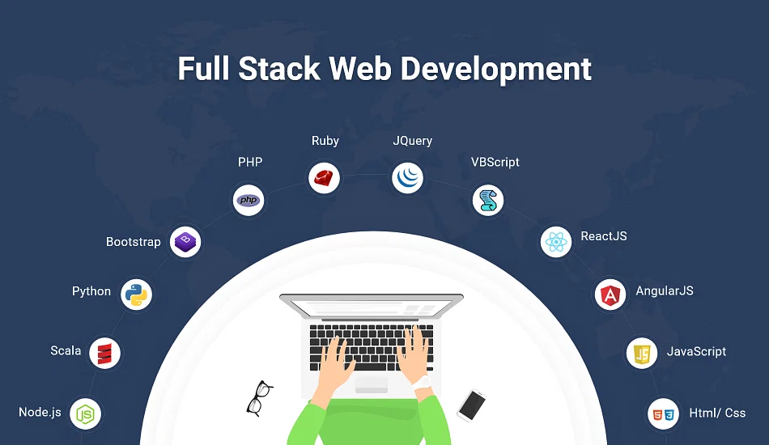

Full Stack Developer

A full-stack web developer is a person who can develop both client and
server software. In addition to mastering HTML and CSS, he/she also
knows how to:
- Program a browser (e.g. using JavaScript, jQuery, Angular, or Vue)
- Program a server (e.g. using PHP, ASP, Python, or Node)
- Program a database (e.g. using SQL, SQLite, or MongoDB)